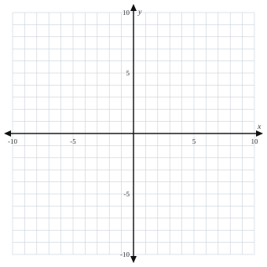

4.4 Writing Linear Equations
- Write an equation for a line from a graph
- Write an equation from the slope and intercept, the slope and a point, or two points
- Find equations of lines parallel or perpendicular to a given line
Warm-Up
1. Line A goes through (0, 2) and (3, 5). Line B goes through (0, 2) and (3, 4). Which is steeper, and how can you tell without graphing?
3. In y = 2x + 1, what does the 2 mean? What does the 1 mean?
2. Graph y = 23x + 3.

4.4.1Slope and Intercept Are Known
m = 4, b = −2 →
m = −34, b = 5 →
m = 2, b = 7 →
4.4.2From a Graph
- Find where the line crosses the y-axis — that is .
- Pick two clear points and count rise over run to get .
- Substitute both into .
b = m =
Equation:
Equation:
4.4.3Slope and a Point Are Known
- Start with y = mx + b.
- Substitute the slope and the of the point.
- Solve for .
- Write the final equation.
Substitute:
b = Equation:
y − y1 = m(x − x1)
Redo EX 5 with point-slope form, then rewrite it in slope-intercept form:4.4.4Two Points Are Known
- Label the points (x1, y1) and (x2, y2).
- Find the slope: m =
- Substitute of the points into y = mx + b.
- Solve for b and write the equation.
m =
b = Equation:
Check: does the other point fit your equation?
4.4.5Parallel and Perpendicular Lines
Parallel lines have slopes.
Perpendicular lines have slopes: m⊥ =
New slope:
Equation:
New slope:
Equation:
Practice
Slope & Intercept Known
1. m = 3, b = −1
2. m = −2, b = 4
3. m = 12, b = 0
4. m = −34, b = 5
5. m = 0, b = −6
From a Graph
6.

7.

8.

9.

10.

From Two Points
| Points | Find m, then b | Equation |
|---|---|---|
| 11. (1, 3) and (5, 7) | ||
| 12. (−2, 3) and (2, −1) | ||
| 13. (3, −1) and (7, 5) | ||
| 14. (0, −3) and (6, 9) | ||
| 15. (5, 2) and (1, −2) | ||
| 16. (0, 4) and (4, 0) | ||
| 17. (−3, 6) and (0, −3) | ||
| 18. (1, 1) and (3, 5) | ||
| 19. (0, −2) and (4, −2) | ||
| 20. (10, 0) and (0, 5) |
Parallel & Perpendicular
| Line | New slope, then b | Equation |
|---|---|---|
| 21. Parallel to y = 2x + 1 through (0, −3) | ||
| 22. Perpendicular to y = −12x + 5 through (4, 2) | ||
| 23. Parallel to y = x − 4 through (0, 6) | ||
| 24. Perpendicular to y = 13x + 2 through (3, 1) | ||
| 25. Parallel to 3x + 2y = 6 through (2, −1) (solve for y first) |
Challenge
Perpendicular slope:
Its equation:
Intersection: